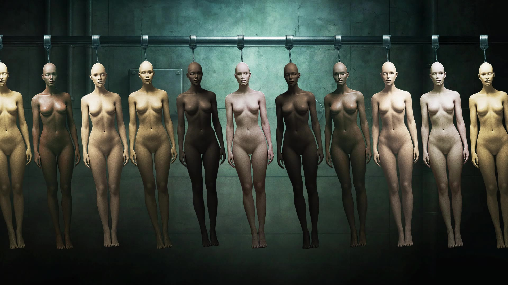
THE PURSUIT OF THE IDEAL is a spatial video installation in three projections that places the viewer inside a factory that produces bodies — a cold, industrial allegory for the mass production of the female ideal. The three projections work as successive stages of a manufacturing process, in which technology, capitalism and patriarchy converge into a system that decides what counts as an “ideal” and “beautiful” body.
How it was made. AI gave me only the starting point: still images. The bodies don’t move by themselves — I took every image apart, piece by piece, in Photoshop (the press most of all) and animated them by hand in After Effects. The head was generated with Sora. I edited the whole piece in Premiere Pro and built the sound myself, in Audacity and Premiere Pro.
documentation of the installation
three projections
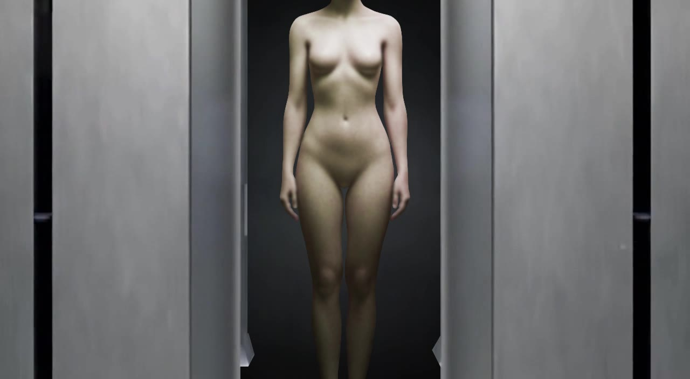
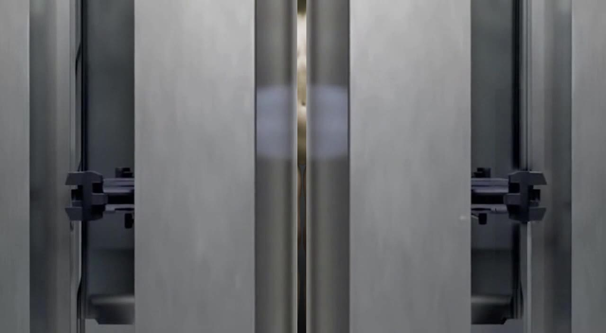
The first projection shows a press, inspired by the plastic moulding machines used to make boats. A material — plastic or silicone — drops vertically from a tube and is crushed between two plates; what comes out is no longer an object of use, but a female body.
The image recalls a mechanical ritual of mass shaping. Every press is a symbolic act of conforming to whatever body is “right” at the moment.
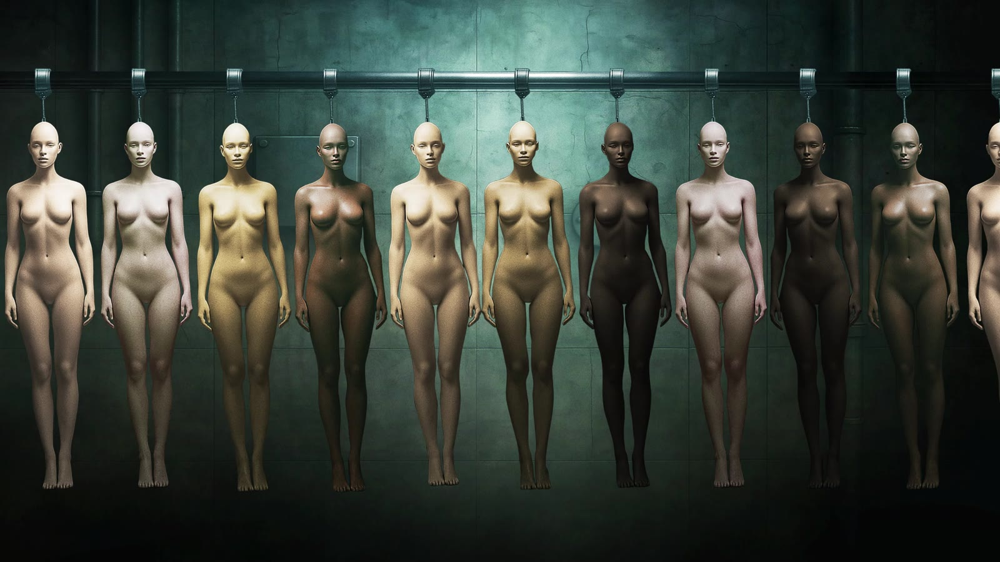
The second projection shows the variations of the same mould: body after body on the production line, different only on the surface.
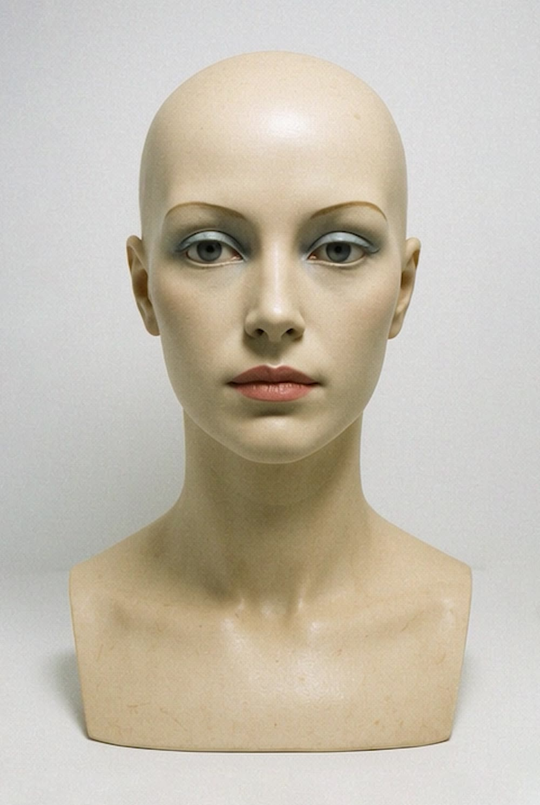
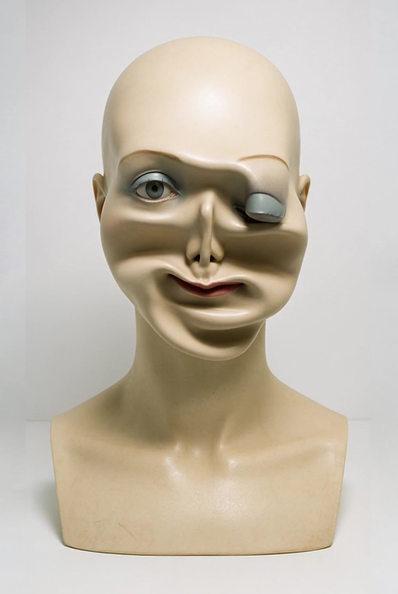
The third projection shows a female head that keeps changing: distortions, deformations, melting, mutations. The sequence refers to the standards of social media, where the “perfect” face and body are built through filters, Photoshop, cosmetic surgery and, now, artificial intelligence.
The woman becomes a model under constant processing — a product to be optimised.
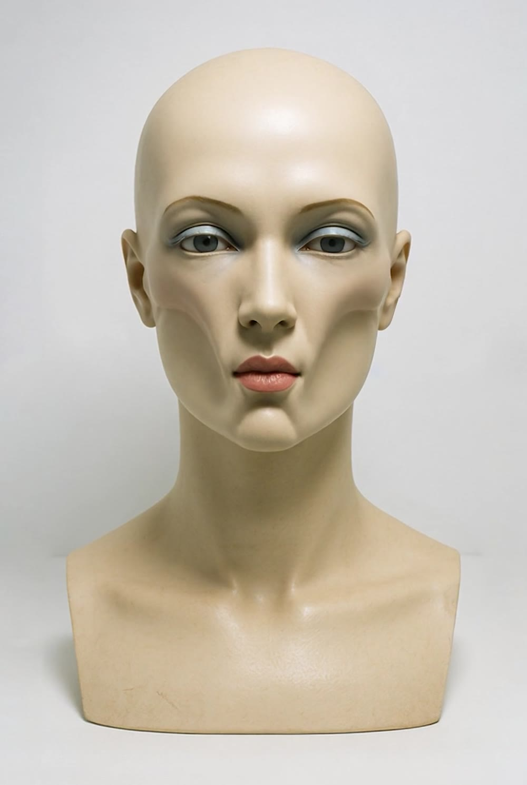
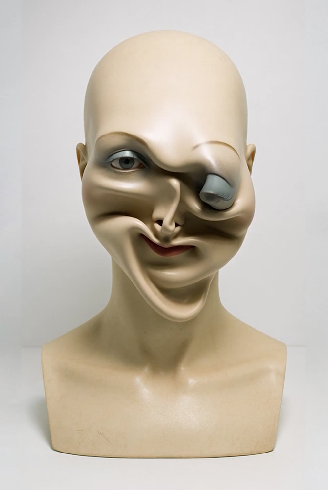
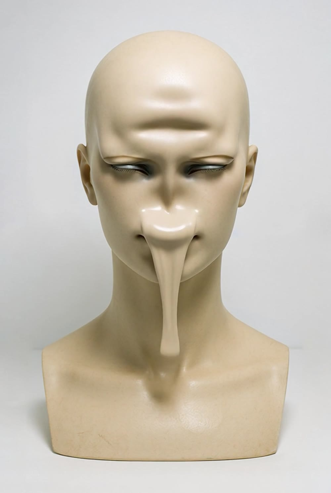
in the space
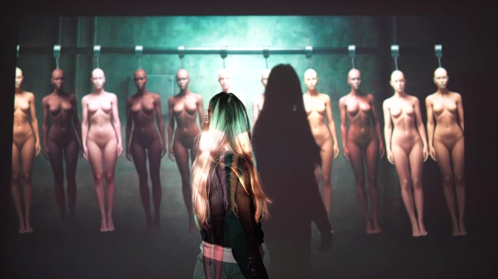
Together, the projections turn the room into a factory of the ideal — a machine that produces fantasies and disappointments.
The cold, technological aesthetic and the use of AI to create the original material strengthen the metaphor: the same technology that promises progress becomes a tool for the mass reproduction of stereotypes.
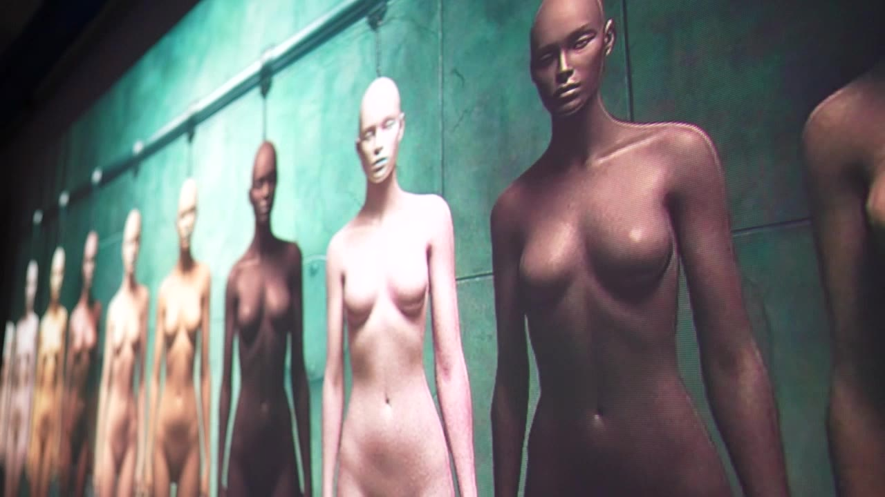
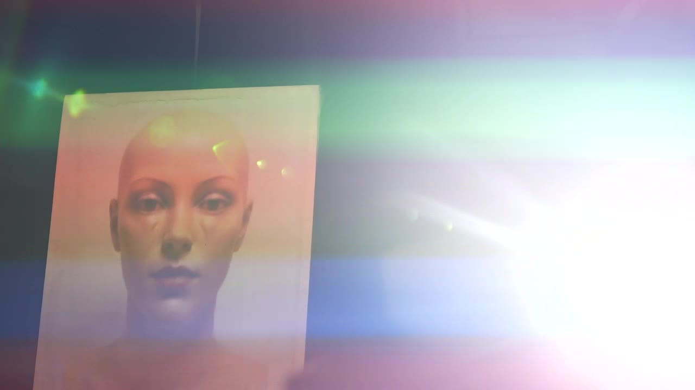
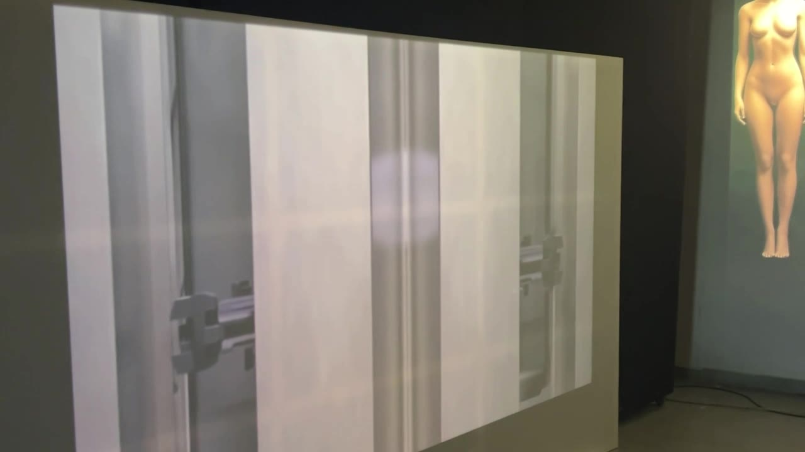
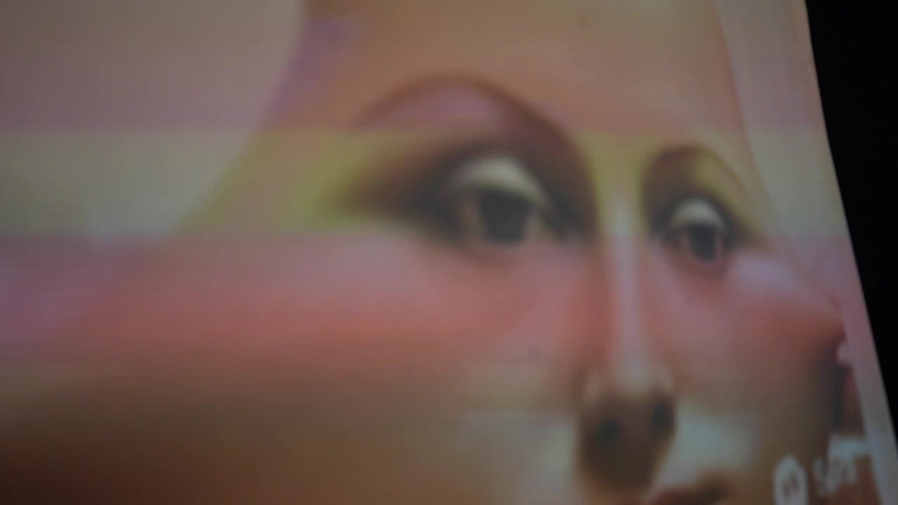